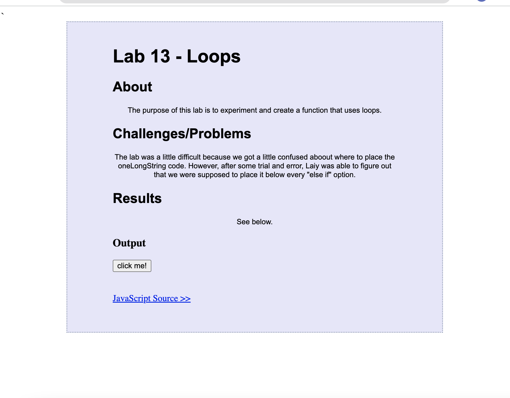

Lab 14 - Debugging Tools & Strategies
About
The purpose of this lab is to use your debugging knowledge to fix old assignments.
Challenges/Problems
Overall, there were minimal issues with completing this lab. I looked over my past assignments and fixed some of the css so that everything looked center instead of tilted to the left.
Results
Refer to an example (Lab 13) below.
